24节气 · 250×122原始点阵
字形表取自交付应用编译字表，供逐字检查；下方72张图来自同一应用的时钟、月历和图片日历完整绘制路径。全部原始尺寸，无缩放、平滑或浏览器绘字。模拟器不代表实体墨水显影。
27字检查数据 · 固件与逐图来源
小寒 · 2026-01-05 · clock8000字节点阵小寒 · 2026-01-05 · calendar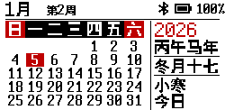
8000字节点阵小寒 · 2026-01-05 · photo-calendar8000字节点阵大寒 · 2026-01-20 · clock8000字节点阵大寒 · 2026-01-20 · calendar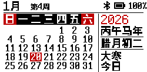
8000字节点阵大寒 · 2026-01-20 · photo-calendar8000字节点阵立春 · 2026-02-04 · clock8000字节点阵立春 · 2026-02-04 · calendar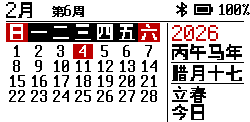
8000字节点阵立春 · 2026-02-04 · photo-calendar8000字节点阵雨水 · 2026-02-18 · clock8000字节点阵雨水 · 2026-02-18 · calendar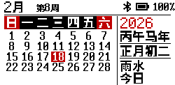
8000字节点阵雨水 · 2026-02-18 · photo-calendar8000字节点阵惊蛰 · 2026-03-05 · clock8000字节点阵惊蛰 · 2026-03-05 · calendar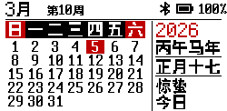
8000字节点阵惊蛰 · 2026-03-05 · photo-calendar8000字节点阵春分 · 2026-03-20 · clock8000字节点阵春分 · 2026-03-20 · calendar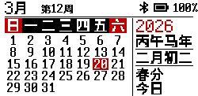
8000字节点阵春分 · 2026-03-20 · photo-calendar8000字节点阵清明 · 2026-04-05 · clock8000字节点阵清明 · 2026-04-05 · calendar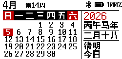
8000字节点阵清明 · 2026-04-05 · photo-calendar8000字节点阵谷雨 · 2026-04-20 · clock8000字节点阵谷雨 · 2026-04-20 · calendar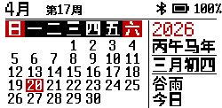
8000字节点阵谷雨 · 2026-04-20 · photo-calendar8000字节点阵立夏 · 2026-05-05 · clock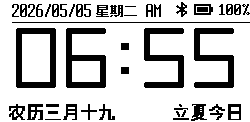
8000字节点阵立夏 · 2026-05-05 · calendar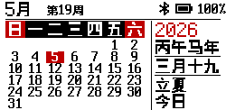
8000字节点阵立夏 · 2026-05-05 · photo-calendar8000字节点阵小满 · 2026-05-21 · clock8000字节点阵小满 · 2026-05-21 · calendar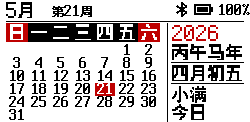
8000字节点阵小满 · 2026-05-21 · photo-calendar8000字节点阵芒种 · 2026-06-05 · clock8000字节点阵芒种 · 2026-06-05 · calendar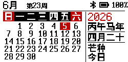
8000字节点阵芒种 · 2026-06-05 · photo-calendar8000字节点阵夏至 · 2026-06-21 · clock8000字节点阵夏至 · 2026-06-21 · calendar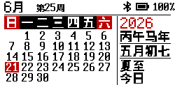
8000字节点阵夏至 · 2026-06-21 · photo-calendar8000字节点阵小暑 · 2026-07-07 · clock8000字节点阵小暑 · 2026-07-07 · calendar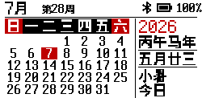
8000字节点阵小暑 · 2026-07-07 · photo-calendar8000字节点阵大暑 · 2026-07-23 · clock8000字节点阵大暑 · 2026-07-23 · calendar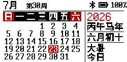
8000字节点阵大暑 · 2026-07-23 · photo-calendar8000字节点阵立秋 · 2026-08-07 · clock8000字节点阵立秋 · 2026-08-07 · calendar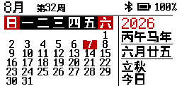
8000字节点阵立秋 · 2026-08-07 · photo-calendar8000字节点阵处暑 · 2026-08-23 · clock8000字节点阵处暑 · 2026-08-23 · calendar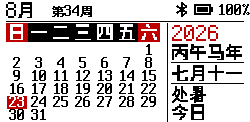
8000字节点阵处暑 · 2026-08-23 · photo-calendar8000字节点阵白露 · 2026-09-07 · clock8000字节点阵白露 · 2026-09-07 · calendar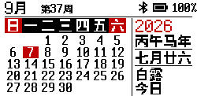
8000字节点阵白露 · 2026-09-07 · photo-calendar8000字节点阵秋分 · 2026-09-23 · clock8000字节点阵秋分 · 2026-09-23 · calendar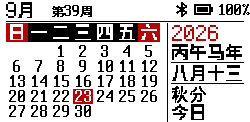
8000字节点阵秋分 · 2026-09-23 · photo-calendar8000字节点阵寒露 · 2026-10-08 · clock8000字节点阵寒露 · 2026-10-08 · calendar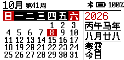
8000字节点阵寒露 · 2026-10-08 · photo-calendar8000字节点阵霜降 · 2026-10-23 · clock8000字节点阵霜降 · 2026-10-23 · calendar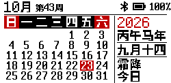
8000字节点阵霜降 · 2026-10-23 · photo-calendar8000字节点阵立冬 · 2026-11-07 · clock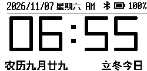
8000字节点阵立冬 · 2026-11-07 · calendar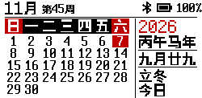
8000字节点阵立冬 · 2026-11-07 · photo-calendar8000字节点阵小雪 · 2026-11-22 · clock8000字节点阵小雪 · 2026-11-22 · calendar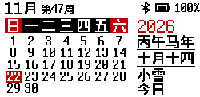
8000字节点阵小雪 · 2026-11-22 · photo-calendar8000字节点阵大雪 · 2026-12-07 · clock8000字节点阵大雪 · 2026-12-07 · calendar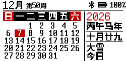
8000字节点阵大雪 · 2026-12-07 · photo-calendar8000字节点阵冬至 · 2026-12-22 · clock8000字节点阵冬至 · 2026-12-22 · calendar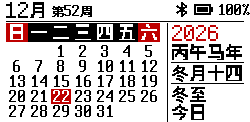
8000字节点阵冬至 · 2026-12-22 · photo-calendar8000字节点阵